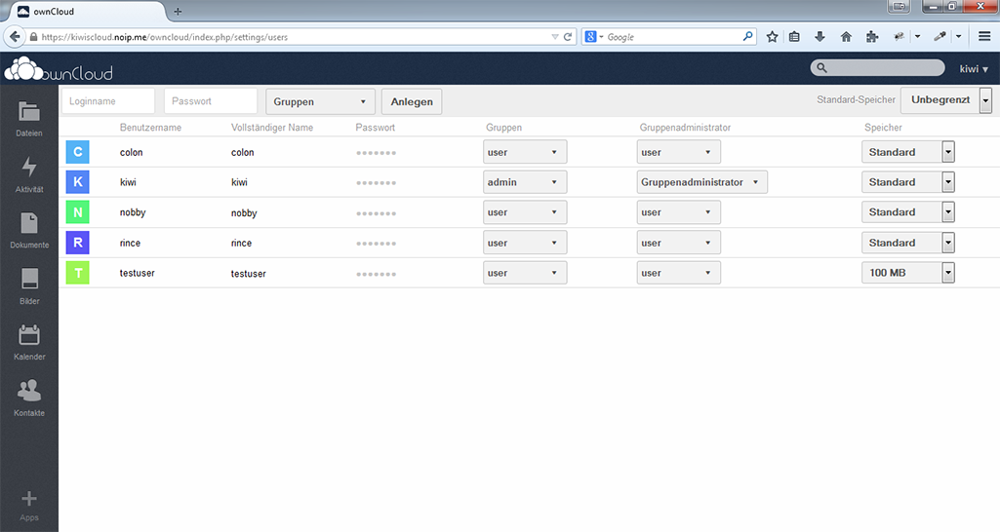

Professur Verteilte und Selbstorganisierende Rechnersysteme
Technische Universität Chemnitz
Chemnitz, Deutschland
1. Introduction
Web Engineering, as it stands, is a multidisciplinary area that covers and concentrates on the implementation,
User experience design, software development, Web Technologies,
security, and maintenance of web based applications.
The field of Web Engineering is constantly evolving as new technologies and techniques emerge.
Moreover, The future of Web Engineering may be influenced by emerging technologies such as Artificial Intelligence,
Machine Learning, Blockchain, and the Internet Of Things.
Quo Vadis is a Latin word that means "Where are you going".
In the context of this research, Web Engineering Quo Vadis is an interesting topic that explores the current
state and future directions of Web Engineering.
It encourages,exploration and discussion about the future possibilities and challenges that lie ahead in Web Engineering.
2. Use Cases
2.1. Technology Roadmap
By researching the future of Web Engineering which can develop a roadmap where it guides organizations on where to invest their resources and efforts
in developing web applications and websites. it helps to look into the current trends and advancements that are likely to happen in the world of web development.
By this research, organizations can identify and prioritize the technologies and frameworks that will most important and valuable in the future
and can make informed decision about which technologies and approaches to adopt, ensuring that they stay upto date and a head of the curve in the rapidly evolving world of web engineering.
2.2. Performance Optimization
By doing research and staying up-to-date on the latest trends.
Performance optimization is all about making websites and web applications run faster and more efficiently When we understand in which direction
Web Engineering is going in the future,
we can use that knowledge to improve the performance of web applications.
It will help to learn about new coding practices that will make web applications more efficient.
That means writing code in a way that uses fewer resources and executes faster.
2.3. Emerging Technology Integration
Emerging technology in Web Engineering means using new and existing technologies to make web applications better and more innovative.
This research, where we can predict the future of web engineering, helps us use these emerging technologies in our web applications.
Let us consider AI (artificial intelligence).
Integrating AI into web applications will make them smarter and more capable of understanding and responding to the user
and the other is the Internet of Things, which refers to a network of physical objects.
By integrating IOT technologies into web applications, we will be able to interact with and control these smart devices.
2.4. Security and Privacy Measurements
Researching the future of Web Engineering, in which we can identify and address potential security and privacy risks.
By doing this research, we can develop strong security frameworks such as firewalls and encryption techniques
that keep websites and web applications safe from attackers and unauthorized access to the systems.
These measures keep user information safe and maintain their privacy while using the web application and websites.
3. Motivation
The research in the Web Engineering Quo Vadis will help and motivate the students in the Thesis region,
as this research serves as a guiding light in understanding and exploring the current trend and its advancements.
This research gives valuable insights into the current topics of Web Engineering,
empowering them to focus their efforts on specific areas or fields that hold immense potential by developing
innovative ideas that help in the development of the web.
Researching Web Engineering, Quo Vadis,plays a crucial role in identifying research gaps within the field.
By examining the current state of Web Engineering and analyzing the current trend,
this research sheds light on areas that require further exploration and investigation.
One way this research helps in identifying research gaps is by providing the existing literature
and studies within Web Engineering.
This highlights the key topics, methodologies, and findings of previous research,
allowing students to identify which areas have been extensively studied.
4. Phases Of Web Engineering Quo Vadis
4.1. There are three phases for this Web Engineering Quo Vadis.
4.1.1. Research Planning
To undertake the research in Web Engineering Quo Vadis and identify the current trends,
we initiated the research planning phase.
we were given four distinct research questions that would guide our investigation.
figure :Phases of Web Engineering Quo Vadis.
4.1.2. Data Collection
During the data collection phase of Web Engineering Quo Vadis, a systematic approach was adopted to
gather the relevant data from wide range of resources. we were given 5 years of conference papers and
journals of web engineering from that we have gathered the relevant data for the analyzing the four research
questions. after the initial screening, the Conference Papers and Journal Articles are carefully reviewed and
relevant data were collected. This includes the name of the Title, Abstract, Keywords, Authors, Affiliations, Length of Publication,
Citations, Volume Number, Page Number, Links, Country, Venue, Name of issue, Year.
The data collection process involved systematically organizing the extracted data for further analysis.
The collected data served as a valuable resource for analyzing the four research questions.
4.1.3. Data Analysis
Once the data has been gathered, we then analyze it using the proper analysis methods.
To obtain valuable insights and reach conclusions, this phase involves gathering, cleaning, and analyzing the data.
First, we categorized the data into relevant categories. The data's correct arrangement enabled us to evaluate and
visualize without suffering any negative side effects.
Once the data is organized, we start cleaning it, which means deleting duplicate data and adding the missing values.
By ensuring that the data is clean, the analysis results are more accurate and reliable.
After the data collection, the processed data is ready for visualization.
This data analysis helped us visualize the distinct research questions accurately.
4.1.4 Visualization Phase
The third phase is data visualization, which is the crucial part in the research of Web Engineering Quo Vadis as it gives the final result of this research.
We have four different questions to do this visualization. For the visualization, we used different methods, such as bar graphs,
which allow for the comparison of different categories,and pie charts, which are ideal for representing the percentages.
Finally, with this visualization, we draw the current trend in Web Engineering based on the data collection of the past
five years.
3. Data Resources
The data resources we used for this research in Web Engineering Quo Vadis take the form of two primary resources
ICWE [1] stands for International Conference on Web Engineering, and JWE stands for Journal of Web Engineering[2] .
It serves as a valuable source of scholarly articles and research papers in the field.
SpringerLink is one of the digital library which is widely used website that provides vast collection of scientific and technical publications.
we used for collecting conference papers data.
RiverPublisher is one of the websites that host a range of scientific Journals, including Journals of Web Engineering
is used to collect the data related to Journals of web engineering.
4. What authors are Publishing in these Venues, from which Affiliations, from which Countries,
along with the number of Publications for each of these?
4.1. Visualizing the Top Author in the Publications
figure : Top Authors in Conference Papers .
In the above Visualization, after collecting the relevant data we started visualizing the research questions in this,
We were asked what authors are publishing
in these publication and Journals. At first, we visualize the top Authors with Publications.
In the above visualization as we have huge number of data, we have collected the top five Authors along with the number of Publications.
prof.Dr.-Ing. Martin Gedke is the top Author when compare to the other authors in publishing
the papers in ICWE Conference with almost 20 papers in last five years, this is from 2018 to 2022 along with the data of 2023 year.
4.2. Visualizing the Top Authors in Journals of Web Engineering
figure : Top Authors in Journal Articles .
In the above Visualization. we have collected the top five Authors along with the number of publications in Journal of Web Engineering.
Cheong Ghil Kim is the top Author compared to
other Authors with publication of five Journals in the last five years which is from 2018 to 2022.
Dr.F.Flavius Frasincar, Jiaxing Zhang, Oscar Pedreira, Seok Hee ok are the top four Authors
who published 3 Journals in the past five years.
4.3. Visualizing the Top Countries in the Conference Papers
figure : Top countries in Conference Paper .
For this visualization we have gathered the relevant data from that huge data we took top five countries along with the number of publications belong to them.
After the data collection we started visualizing
using the bar graph. As a result, Germany is the top Country in publishing the high number of Publications than compare to other countries.
With percentage of 26.1 and the next top country if Spain
wth the percentage of 24.3 of Publications in the last five years.
The Third top Country is Italy with the percentage of 20.1 of publications.
China with 15.3 percent and France with 11.1
percent are remind as the next following top countries.
4.4. Visualizing the Top Countries in the Journals
figure : Top countries in Journal Articles.
For this visualization we have gathered the relevant data which is top five countries along with the number of publications belong to them were taken from the huge dataset. after the data collection we started visulizaing
using the bar graph. As a result, China is the top country in publishing the high number of publications than compare to other countries in Journals.
With percentage of 42.0 and
the next top country is SouthKorea with the percentage of 19.3 of publications in the last five years.
The third top country is India with the percentage of 18.4 of publications.
USA with 7.1 percent and spain with 13.2 percent are remind as the next following top countries inn Journal publications.
4.5. visualizing the Top Affiliations in the Conference Papers
figure 3 :Top Affiliations in Conference Papers.
To visualize the top university which has received high number of Affiliations. At first, we have gathered the publications and Affiliations belong to the conference papers of web Engineering.
using the bar graph with affiliations on the x-axis and number of publications on the y-axis by choosing the top five affiliations to get the effective result.
Technische Universität Chemnitz,Germany has received the high number of Affiliations and place in the top over the last five years with publications of 16 papers.
University of Helsinki is the second top country
with publications of 7 papers. Novosibirsk state technical university, Russia, IDlab department of Electronics and information systems Ghent University- imec,
Ghent, Belgium. Ontology
engineering group, Universidad Politecnica de Madrid, Spain are the remaining top five countries which received the 5 Affiliations in publication of papers.
4.6. Visualizing the Top Affiliations in the Journal Articles
figure 4 :Top Affiliations in Journal Articles.
In the above visualization, it shows the top university that received the highest number of Affiliations
based on the number of publications. Taking the Affiliations on the X-axis and number of publications belong to that Affiliations is on the Y-axis
after gathering the relevant data and after the
Computer Languages and Systems Department. University of Seville, received the four
Affiliations over the last five years. School of Sociology, Wuhan University, Wuhan, Hubei, China and Computer and Communication Engineering for Capacity Building Research Center,
School of Information Technology, Mae Fah Luang University, Chiang Rai 57100, Thailand both
received three Affiliations with the number of publications.Department of CSE, Faculty of Engineering and Technology, SRM Institute of Science and Technology,
Vadapalani, Chennai, Tamilnadu, India and Beijing National Research Center for Information Science and Technology (BNRist),
Department of Automation, Tsinghua University, Beijing, China had two Affiliations with the number of publications.
4.2. Funktionsbeispiele
Ein sehr positiver Aspekt ist, dass man die eigene Cloud auch anderen zugänglich machen kann. Der Admin kann Benutzer anlegen und diese Gruppen sowie
Rechte zuweisen (siehe Abb.1). Diese können ihre eigenen Daten hochladen, verwalten, teilen und miteinander interagieren.

Abbildung 1: Liste der eingetragenen Benutzer [13].
Beim Teilen gibt es verschiedene Möglichkeiten dieses zu gestalten. Zum einen können Dateien mit ganzen Gruppen oder einzelnen Personen geteilt werden.
Des Weiteren lassen sich Optionen wie „kann bearbeiten“, „aktualisieren“, „löschen“ und „teilen“ auswählen. Auch das Setzen eines Ablaufdatums ist möglich,
sowie eine zusätzliche Mitteilung per Email mit der Information, dass etwas mit einem geteilt wurde. Aber auch das Teilen mit Dritten, die nicht zu den
eingetragenen Benutzern gehören, ist möglich. Hierfür orientiert sich ownCloud an Dropbox oder auch Google, indem es den Link zum kopieren und weiterleiten gibt
(siehe Abb 2).
Gerade in Hinblick auf das Zusammenarbeiten und Teilen von Daten ist die Übersicht der neusten Aktivitäten sehr nützlich. Hier werden alle Aktivitäten, die
einen selbst betreffen mit zusätzlichen Details angezeigt (siehe Abb.3).
Die Vorteile der Nutzung von Cloud Diensten liegt klar auf der Hand: Die Daten sind unabhängig von Standort und Gerät immer abrufbar. Im Falle eines
Schadens an der Festplatte oder ähnlichem sind zudem diese Daten nicht verloren. Auch vereinfacht es Projektarbeiten. Doch es gibt immer zwei Seiten
einer Medaille und so sollte sich jeder bewusst sein, dass wenn man seine Daten, seien es persönliche, geschäftliche, belanglose oder sensible Daten, online hochlädt und
auf fremden Servern speichert, die theoretische Möglichkeit besteht, dass jemand Fremdes sich leichter und unter Umständen unbemerkt Zugriff zu diesen Daten beschaffen kann.
Große Anbieter wie Dropbox und Google versprechen viel Leistung, gerade auch in Hinblick auf Sicherheit, aber so zeigte sich besonders im letzten Jahr wie
viel hinter den Kulissen geschieht, ausgehend von der Politik und den Geheimdiensten, von dem Anwender nichts mitbekommen. Die besten
Verschlüsselungsalgorithmen bei der Übertragung von Daten oder beim Ablegen der selbigen auf den Servern nützen nichts, wenn die Schlüssel von den Firmen
selbst verwaltet werden und sie auf Verlangen der Regierung diese herausgeben müssen.
Eine Alternative ist sicher die zusätzliche lokale Verschlüsselung, so wie sie Boxcryptor anbietet. Oder auch gänzlich auf das Zwischenspeichern auf
Servern zu verzichten und Daten direkt zu Synchronisieren, so wie BitTorrent Sync es vorschlägt. Die Idee sich seine eigene Cloud aufzusetzen erscheint im
ersten Moment auch eine interessante Alternative zu sein. Jedoch kann dieser Enthusiasmus schnell verfliegen, denn die Herausforderung diese so sicher wie
möglich zu gestalten und den gleichen Service zu bieten wie die Vorbilder, ist doch größer als anfänglich gedacht. Viel Freiheit in Gestaltung und
Umsetzung bedeutet in diesem Fall auch sehr viel Verantwortung, welche nur mit Grundkenntnissen kaum erfüllbar ist.
[3] Borgmann, Moritz et al. "On the Security of Cloud Storage". Fraunhofer Gesellschaft SIT. Darmstadt. SIT Technical Reports. SIT-TR-2012-001. March 2012


.png)